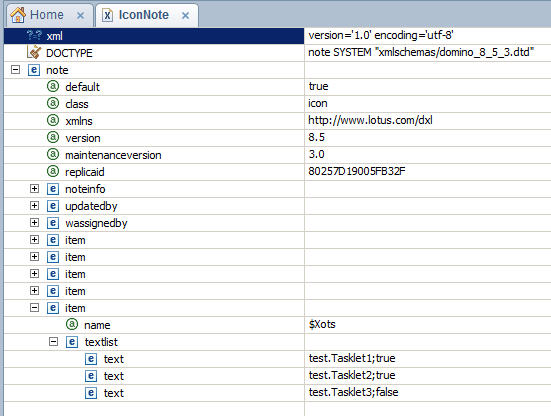

The Xots builder scans Domino databases for java classes that extends org.openntf.domino.xots.XotsBaseTasklet.
The builder stores information about these classes in the Database Icon Note in a multi-valued Text item called $Xots. Each tasklet has the format classname;enabled. The image below shows an example of two enabled and one disabled tasklets.
